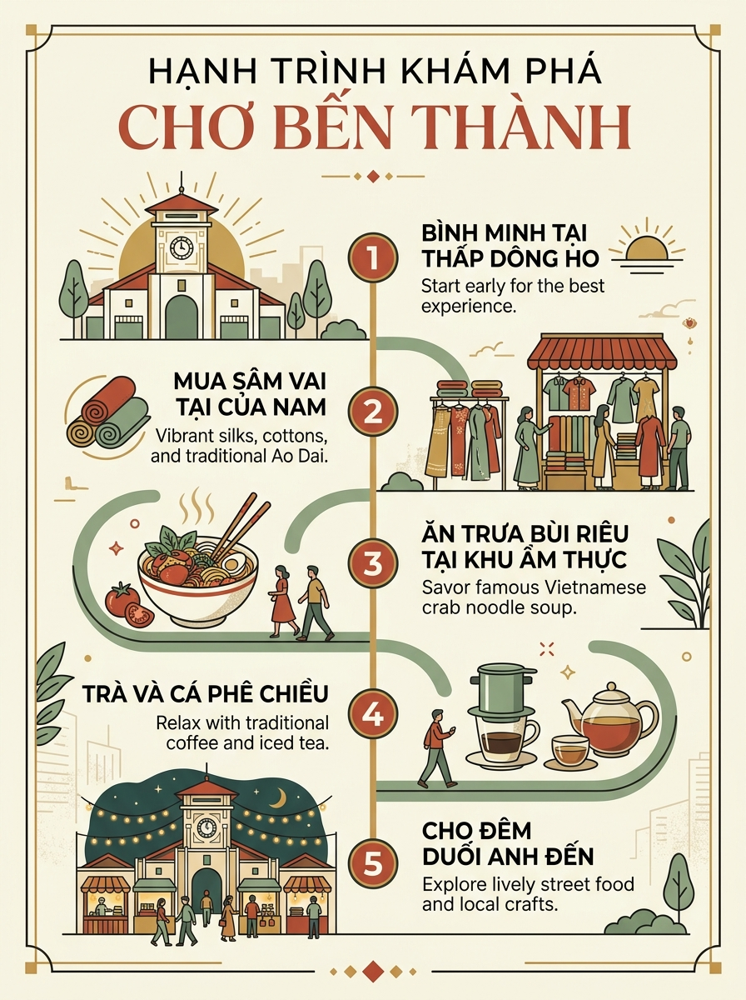

Để cảm nhận trọn vẹn sức sống hơn một thế kỷ của Chợ Bến Thành, du khách nên dành ra một buổi sáng sớm hoặc cả ngày trải nghiệm. Bắt đầu từ khoảnh khắc bình minh tĩnh lặng ngắm tháp đồng hồ, len lỏi vào các sạp lụa tơ tằm, dừng chân ăn trưa tại thiên đường bún riêu cua, nhâm nhi ly cà phê vợt buổi chiều và đắm mình trong không gian chợ đêm lung linh sắc màu.
Dưới đây là ấn phẩm Infographic trực quan và Bảng dữ liệu tiện ích do nhóm tổng hợp đầy đủ phục vụ chuyến đi của bạn.

Bảng dữ liệu giúp du khách dễ dàng tra cứu vị trí các cửa chính, tuyến đường tiếp giáp, ngành hàng trọng tâm và dịch vụ tiện ích xung quanh:
| Khu Vực / Cửa | Tuyến Đường Tiếp Giáp | Ngành Hàng Trọng Tâm | Giờ Hoạt Động | Trạng Thái | Tiện Ích & Kết Nối |
|---|---|---|---|---|---|
| Cổng Nam (Cửa Chính) | Đường Lê Lợi & Quách Thị Trang | Vải vóc, áo dài may đo, quà lưu niệm thủ công | 06:00 – 18:00 | Đang Mở | Ga ngầm Metro Bến Thành, Trạm xe buýt, ATM |
| Cổng Bắc | Đường Lê Thánh Tôn | Hoa tươi, trái cây nhiệt đới, thực phẩm tươi sống | 05:00 – 17:30 | Đang Mở | Bãi giữ xe máy, gần UBND TP. Hồ Chí Minh |
| Cổng Đông | Đường Phan Bội Châu | Thiên đường ẩm thực ba miền, bánh kẹo, hóa mỹ phẩm | 06:00 – 23:00 | Đang Mở | Chợ đêm ẩm thực, bàn ăn gia truyền, điểm đón taxi |
| Cổng Tây | Đường Phan Chu Trinh | Giày dép thời trang, đồ gốm mỹ nghệ, đồ da thủ công | 06:00 – 23:00 | Đang Mở | Chợ đêm đồ lưu niệm, bãi đỗ xe du lịch |
| Hành Lang Trung Tâm | Nút giao giữa 4 cổng chính | Sạp trà mộc, cà phê hạt xay, hải sản khô xuất khẩu | 07:00 – 18:00 | Đang Mở | Quầy thông tin hỗ trợ du khách, thanh toán VietQR/POS |
Chiêm ngưỡng kho tư liệu hình ảnh di sản qua từng góc nhìn:
Xem Thư Viện Hình Ảnh & Tư Liệu →